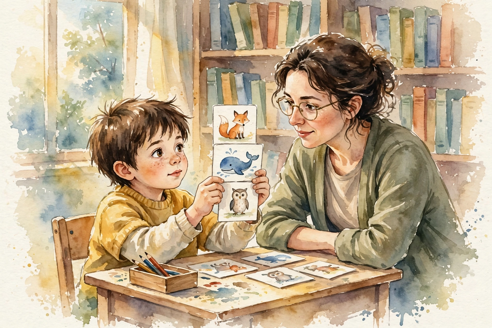
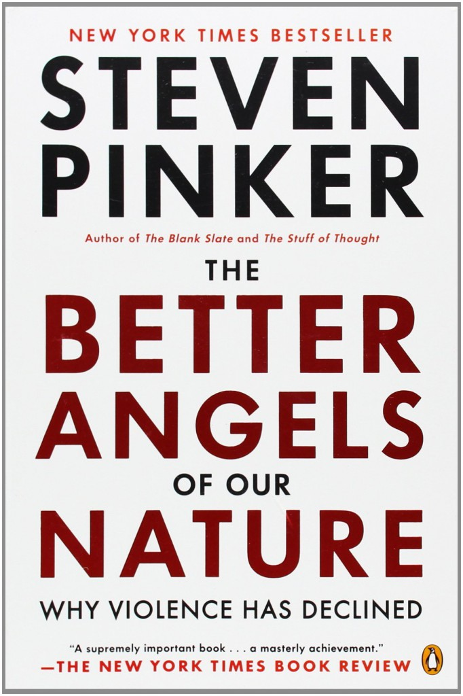

Conversations with Tyler · Episode companion
Steven Pinker on Language, Reason, and the Future of Violence
Recorded at George Mason University in November 2016, this episode moves from irregular verbs to the fate of civilization: how language works, what consciousness is, why reason deserves defending, and whether violence is really in decline.
Stridden into the room
~00:00
Cowen opens with Pinker's early work on irregular verbs and notes how much he thinks like an economist. Why do we have some 165 quirky exceptions, stride and strode, sing and sang, go and went? Pinker says the topic reveals the two mechanisms that make language possible. First, memory: we store arbitrary pairings of sound and meaning by brute force. The word duck looks nothing like a duck, but the memorized pairing lets him plant the thought of a duck in the room.
Second, rules: we combine words into phrases with algorithms that compute the meaning of the whole from the parts. Regular and irregular forms are two ways of marking the past, and the tension between the memory system and the rule system produces the quirkiness of English.

The two systems behind language
Pinker's account of how words and rules divide the labor.
A Hayekian argument
~00:03
Cowen asks whether Pinker knew his verb work formed a Hayekian argument: common verbs go irregular because they are used constantly and easy to remember, while rare verbs take the regular rule, economizing on information in a decentralized way. Pinker reaches for Darwin over Hayek. An irregular verb survives only if each generation memorizes it, and memory thrives on frequency. When a verb declines in fashion, a generation fails to master it, defaults to the add-ed rule, and the verb regularizes for all generations after.
Children are the filter. The stock of irregular verbs erodes as it passes through young minds, and the less frequent ones fall out. That is Darwinian, not designed.
Dreamt becomes dreamed
~00:05
Cowen offers the example, and Pinker confirms it:
Dreamt becomes dreamed.
Cowen asks, Pinker confirms · ~00:05
But dreamt is prettier, Cowen protests, and Pinker agrees. That is one reason irregulars survive: poets, lyricists, and novelists prefer them when there is a choice, strided or strode, strove or strived. The irregulars fit the phonological template of a natural word. The regulars sound kludgy, a verb stem with a bit of detritus hanging off the end. Words like sixths and edited are almost unpronounceable, the price of the rule.
Orwell's 1984
~00:07
In 1984 the Party bans all irregular verbs, a kind of excess regulation. From a social point of view, are there too many or too few? Pinker likes the irregulars and would like more. It is sad when they are lost. Occasionally a new one gains a toehold: snuck is about 120 years old, built on the analogy of dig and dug, stink and stunk, sing and sang. What protects a verb against erosion is similarity to well-memorized neighbors, letting it parasitize their memory strength.
New coinages sometimes start as jokes. Spice as the plural of spouse was cutesy. People over seventy still hear snuck as slang, while the young see no fuss. Language keeps what the young do not question.
Abode, chidden, holp
~00:09
Cowen confesses the verbs he is afraid to use: abide, whose past abode now reads as a noun, and abidden, which he will not touch. Pinker notes that abode dropped out centuries ago, like chid for chide and holp for help. Some survive in Appalachia and remote parts of the British Isles, resisting erosion for obscure, partly capricious reasons.
One vanishing distinction genuinely saddens him: the three-way split of sink, sank, sunk and stink, stank, stunk, where the middle forms give way to the participles. English conjugation is already so depauperate, he says, that the remaining distinctions deserve defense. In his style manual he recommends hanging on to them.
Chomsky
~00:11
Cowen, the outsider, asks whether Chomsky's universal grammar was simply wrong, collapsing as it did into the near-tautology of recursion. Pinker says the hypothesis is hard to pin down, partly because Chomsky revises it every decade, on the principle of continuous revolution. It was never specified precisely nor tested against language variation, which he calls unfortunate for ordinary science.
Still, he defends a version of the idea. The child does not record sentences verbatim. The child is biased to analyze speech in particular ways, pulling combinatorial rules out of the stream. That set of abilities, the innate structure that does the learning, is what he would call universal grammar. Languages share commonalities because each generation rebuilds language from the data of parents and peers.
Modules
~00:14
Jon Haidt's modules suggest political discourse is ruled by independent mind-parts. Pinker traces the metaphor to Jerry Fodor, with Howard Gardner's multiple intelligences and the evolutionary psychologists' Swiss Army knife as cousins. He finds modules too strong a metaphor, snap-in components with narrow channels, and prefers faculties, an old-fashioned word. The mind has specialization and structure without literal independence, like blood, which suffuses every tissue and cannot be carved out.
He agrees with Haidt on the substance: different mindsets frame the same events, and much political disagreement is a disagreement about which frame to use.
The self
~00:17
What is the self for? Pinker separates self-knowledge from subjective experience, the qualia, the what-it-is-like. A robot could monitor itself with no one home. The hard problem of consciousness may be a quirk of the mind reflecting on itself: every aspect of consciousness has a physical correlate, no ESP, no soul smuggled back in, yet why it feels like something remains unanswered.
He gravitates toward the mysterian view, associated with Colin McGinn: some facts about the universe are true, and we will never feel we understand them, not because science is incomplete but because our way of grasping reality makes them puzzling. Intuition hits a wall here, as it does on time, on what came before the Big Bang, on whether the universe is finite or infinite.
Determinism
~00:22
Are our minds fully determined? In theory, perhaps Laplace's demon could predict every choice. In practice, the system is chaotic and nonlinear, ions zigging from Brownian motion, complexity stacked like weather to several higher powers. Some true-in-theory things are so mind-bogglingly complicated they may as well not be true. There is no miracle in the brain at decision time. In that sense we are determined, and for all practical purposes we are not.
The underlying unity
~00:24
Cowen proposes the unity of Pinker's work: a midway position between blank-slate theorists who see no structure and over-structurers like the early Chomsky, leaving room for reason within the laws of nature, a rearticulation of the Enlightenment. Pinker accepts the shape but not the caricature. He does not split differences or hunt Goldilocks zones.
The middle ground, properly done, goes down a level to finer-grained causal mechanisms. On nature versus nurture, the answer is not halfway: there is an innate structure that does the learning. What is innate is the ability to learn, and that dissolves the dichotomy rather than compromising on it.
The midway position, properly done
Pinker's method across debates, stylized.
Reason versus skepticism
~00:29
Cowen confesses he believes in reason less than Pinker does, and calls himself more Hayekian: people ruled by passions, reason fairly weak. Pinker answers with a question: what are we doing here if not reasoning? The very act of posing the question commits you to reason.
On Hume, he is precise. Reason as slave of the passions is not the psychological claim that people lose control. It is the conceptual point that reason cannot tell you what your goals should be. Deduction cannot produce an ought. That is compatible with people becoming more rational, through science, debate, and the exploration of implications now under way.
The historical record is his exhibit. Bad ideas get dropped, not quickly, not absolutely, but we no longer practice human sacrifice or throw virgins into volcanoes to fix the weather. Hereditary monarchy is nearly gone. The frontal cortex, grafted onto the passionate brain, can count to ten, save for a rainy day, and hold its horses, often enough to celebrate.
Underrated, overrated
~00:34
The lightning round. Rap music: Pinker never got it, but he refuses to call it overrated.
I never got rap music.
Steven Pinker · ~00:34
His not owning any rap is no argument about its objective merit, and he is a relativist about dialects too: there is nothing inherently to choose between the rules of Black English and any other vernacular. A standard is still worth having, for communication and efficiency. In a different history, the standard could be Black English.
Aerobic exercise: underrated, he jogs and cycles. Behavioral economics: he is for it, but it dismisses classical economics too quickly, a false dichotomy. A collective enterprise running on rules can be rational even when no individual mind is, and market experience cures the lab fallacies. The passive voice: underrated. No construction survives 1,500 years without serving a purpose, and both Orwell's and Strunk and White's style guides accidentally use the passive in the very sentence that bans it. William Shatner: underrated, fellow Montreal Jew, though perhaps not his singing. Susan Sontag on photography: overrated, or at least that passage.
The mind is many parts.
Steven Pinker · ~00:37
The underrated versus overrated scoreboard
Pinker's live ratings, November 2016. Not advice.
Biggest mistake
~00:42
Asked for his biggest mistake, Pinker punts, cheerfully. Where to begin, he laughs, and declines to pick one, while insisting the punt should not suggest he has made none.
World peace
~00:43
Cowen poses the thought experiment: if $10,000 and a few months let anyone on earth build a Hiroshima-scale bomb, how long before someone does it? Pinker has no idea and refuses to prophesy. His optimism is not prediction. It is the observation that the pessimistic view is factually wrong: we are not living in unusually violent times.
Cowen presses the trend argument: destructive power gets cheaper as societies get wealthier. Pinker's reply has two weak premises. First, not every curve is exponential. Air travel leveled off after 1957, and a $10,000 nuke still needs its centrifuges. Second, the rate-limiting step is desire. The violence we see is not limited by the cost of technology. It is limited by the number of people who think blowing things up for no reason is a good idea. Seventy-plus years without a wartime nuclear weapon suggests they are not terribly useful weapons: a radioactive crater is not a coherent war goal.

Fermi
~00:49
Cowen tries the Fermi paradox: if civilizations survive, where are they? Perhaps they destroy themselves when energy gets cheap. Pinker sees no natural arc toward self-destruction. The trajectory so far runs the other way: advancing civilizations develop mechanisms that make conflict less likely.
War is a pretty stupid thing to do.
Steven Pinker · ~00:49
You blow things up, kill people, and gain nothing you could not get otherwise. Belligerence invites destruction. With world government or its functional equivalent, international norms and expectations, everyone lives better. It is just as plausible that civilizations make war obsolete as that they perfect it.
Primates and threats
~00:51
Will the other primates go extinct? Not the monkeys. Monkeys are like rats, everywhere in India. The great apes face a race between poaching and habitat destruction on one side and conservation and ecotourism on the other. They could vanish, but they do not have to.
The greatest existential threats: climate change and nuclear war. Climate change would not extinguish the species, people can move and adjust, but under extreme scenarios it would be miserable and unrecognizable. Nuclear war needs no elaboration.
Ed Sullivan
~00:52
Favorite TV show? The Ed Sullivan Show: Italian acrobats, a Jewish comedian, the Beatles, the Supremes, another Jewish comedian, all in an hour. Sullivan was an early proponent of integration on television, booking the Supremes more than any other act in an era when America had barely started to desegregate. He also liked Hill Street Blues and Cheers, and admits he ought to watch more TV than he does.
CRISPR
~00:54
Should parents design smarter children? Pinker is skeptical of the premise. The 1990s hunt for single genes for traits produced false alarms. Genetic influence spreads across thousands of genes, each shifting a trait by a smidgen, many with mixed effects. There is no gene for musical ability to install. That is not how genes work.
Even with big data and fifty generations, the tradeoffs are unknown: how much brainpower can you add without adding brain cancer? A denser neural network can be stupider. And every edit risks something going wrong. People will not eat a modified tomato. They will not take that risk with children. The scenario is too complicated to worry about, and probably not productive to debate.
The bookshelf
~00:57
The surprising book on his shelves: a big stack of bicycling magazines. He is obsessed with the weight in grams of different derailleurs and water bottle cages. Aerobic exercise, underrated once more.
Language death
~00:58
Are we headed for linguistic homogeneity? Almost certainly we are in a mass extinction of languages. But it will not end with everyone speaking English. Even if 90 percent of languages die, 600 remain, and no one will give up Spanish, Hindi, Russian, or Chinese soon. Translation software, national media, old-fashioned national pride, and the comfort of the mother tongue will keep many tongues alive.
Dreams
~00:59
Can dreams prophesy the future? No.
I think dreams are a kind of screen saver.
Steven Pinker · ~00:59
Prophecy would violate what we know of physics. Then the euphemism treadmill: negro to black to African American, each label absorbing the taint of the last. Language does not determine attitudes, though it pushes against them. Pronouns resist engineering because they are learned early, highly frequent, and spread across millions of speakers. Deliberate redesign of grammar has never caught on.
Politeness
~01:04
Is public speech becoming less polite? Possibly, but Trumpism does not show attitudes changed. Search data on racist jokes shows no sudden U-turn. What changed is permission: people who kept quiet now feel the taboos are broken. Pinker hopes for a benign taboo against overtly racist, misogynistic, and homophobic language, a benevolent hypocrisy that keeps ugly things unsaid in public because saying them legitimates them.
Whorf
~01:06
How central is language to the human? Central to everything else. It makes cooperation possible across time: you can trade a favor now for a payback far in the future, which barter cannot do. Information is the ultimate trade good, nonrival, shareable without loss, multipliable. Language lets a discovery spare everyone else the remaking of it.
But not Whorf's determinism. If we could only think thoughts we had words for, language could never originate. We had ideas before we could articulate them, and coined words for them. Language was never designed by a committee. Millions of speakers coined jargon and circumlocutions that went viral and entrenched, the spontaneous order Hayek described. Grammatical language, with unlimited combinations from arranged parts, is unique to our species. Birdsong has no semantics.
Why language pays: the information trade
Pinker's argument for language as the ultimate trade good, stylized.
Group selection
~01:11
Is group selection, E. O. Wilson's and Haidt's idea, the answer to the violence decline? Pinker calls it a big blunder, a bad analogy. There is no Darwinian process of differential survival that applies to groups the way it applies to genes.
Are we evolving to be less violent, genetically? He doubts it, though he cannot rule it out. The evidence against: violence declines on timescales too fast for natural selection. Germany went from the most militaristic culture on earth to the most pacifist in about a generation. The American homicide rate fell in half in eight years. No generational turnover can explain that. Behavior changes fast. Genes need not be invoked.
Too fast for genes
Pinker's examples of rapid violence decline, as stated in conversation.
Fashion
~01:13
Language has stronger network effects than fashion, but are we headed for one global look? Pinker sees both: globalization of fashion and youth culture, baggy shorts everywhere, male elites in neckties and jackets, and constant churning underneath. The theory comes from the art historian Quentin Bell, via Veblen: elites differentiate from the rabble, sumptuous fabrics once broadcast unfakeable wealth, but cheap manufacturing killed sumptuousness as a signal.
Now the signal is rarity itself. When everyone has long hair, show up with a crew cut. The elite look trickles down, lands in Target, and the elite jump to the next rarity. Like parasite-host coevolution, being rare is an advantage until it becomes common.
Critical periods
~01:18
Chinese infants nail tones long before consonants, while the State Department spends two years teaching adults who almost never get them. Pinker confirms sensitive periods, sharpest for phonology and accent. Vocabulary has no critical period. We learn words all our lives. Syntax sits between. His own unpublished work suggests the beginning of the end for native mastery starts around age fifteen.
Younger is better, but with 6,000 languages you cannot know which one your child will need. No one can yet name the brain change behind it. We are simply ignorant of what, if anything, changes.
Caplan
~01:21
Bryan Caplan asks the meta question: Pinker's books show the smartest people deeply wrong about their own subjects. What is wrong with academia that there are so few Pinkers? Pinker declines the flattery and names the disease: intellectual tribalism. It is pleasurable to read what confirms you and annoying to be challenged.
The cure is institutional: rules of the game that make false beliefs embarrassing to hold. Science at its best is that arena. The signs are mixed. Campus speech restrictions go the wrong way, and Greg Lukianoff's Foundation for Individual Rights in Education fights them well. The internet was supposed to break institutional barriers to the best ideas. Instead it festers conspiracy theories. How to tilt the norms so that falsehood embarrasses, he wishes he knew.
The New Enlightenment
~01:25
Caplan's price for the last answer: name the next book. The tentative title is The New Enlightenment: A Manifesto for Science, Reason, Humanism, and Progress. The argument: the Enlightenment philosophers got a lot right, and their dreams come true.
The full conversation runs about 86 minutes, recorded before a live audience at George Mason University on November 2, 2016. The transcript carries no timestamps. The times in this companion are proportional estimates from each passage's position in the transcript.
Nuggets of wisdom
- Language runs on two systems: memory and rules.
- Irregular verbs survive by frequency. Children erode the rare ones.
- Dreamt becomes dreamed, and that is a small sadness.
- Snuck is 120 years old and still sounds like slang to the old.
- No one designed language. It evolved by spontaneous order.
- The child does not record sentences. The child extracts rules.
- Modules are the wrong metaphor. Faculties are better.
- Intuition hits a wall on consciousness, time, and infinity.
- Determined in theory, free in practice.
- What is innate is the ability to learn.
- Reason cannot pick your goals. That is a category mistake.
- We no longer throw virgins into volcanoes. Progress is real.
- The frontal cortex can count to ten.
- The passive is underrated.
- The rate-limiting step on terror is desire, not technology.
- War is a pretty stupid thing to do.
- There is no gene for musical ability.
- A million speakers beat a committee.
- The euphemism treadmill runs on attitudes, not words.
- Embarrassment is the engine of truth.